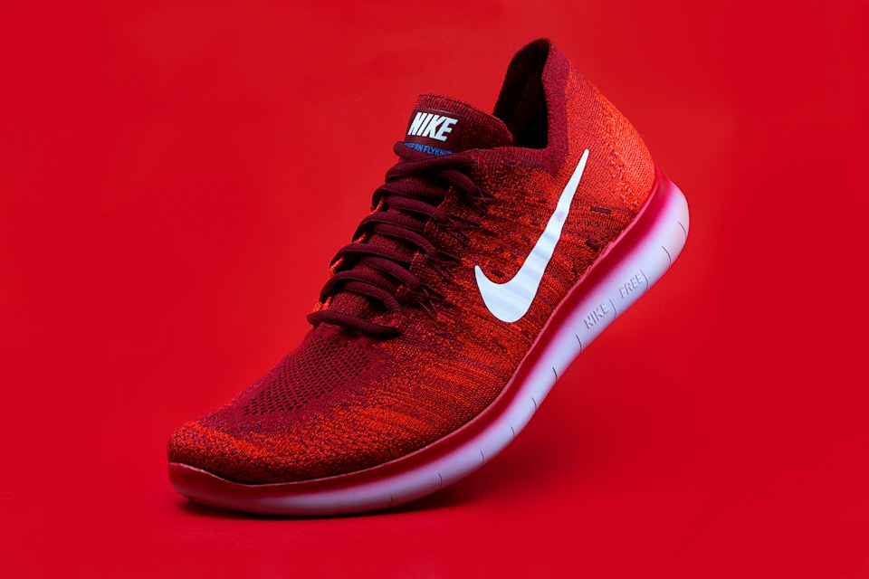

A little ritual can make the whole morning feel brighter. How do
you take your first coffee?
♥ 28 sample likes
3 demo comments
Small steps can make an everyday routine feel lighter. What gets
you moving?

♥ 16 sample likes
1 demo comment
Find a little quiet when your day gets noisy. What’s on your
favorite focus playlist?
♥ 54 sample likes
8 demo comments
A little ritual can make the whole morning feel brighter. How do you take your first coffee?
Maya A slow morning is the best kind.
Small steps can make an everyday routine feel lighter. What gets you moving?

Find a little quiet when your day gets noisy. What’s on your favorite focus playlist?